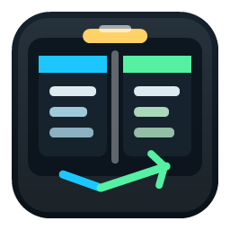

Desktop boundary
The Electron renderer uses a narrow preload bridge; navigation and external links are restricted, and the HTTP backend is loopback-only with a launch capability.

Explore BetterSecurity / local-first boundaries
Powerful local tools should expose less authority than the user who launched them, not more.
Explore Better
The renderer, local backend, filesystem helper, terminal service, elevated terminal broker, and MCP sidecar each receive only the interface needed for their role.
The Electron renderer uses a narrow preload bridge; navigation and external links are restricted, and the HTTP backend is loopback-only with a launch capability.
Local stdio forwards typed requests over an authenticated, same-user named pipe keyed to a revocable profile.
The main app stays non-elevated. A UAC-approved headless broker owns exactly one administrator ConPTY session when explicitly requested.
Explore Better
Copies, moves, overwrites, and AI-planned mutations use staging, backups, durable journal phases, source-removal tracking, cancellation, recovery, and undo.
Apply tokens bind the profile, session, operation, normalized paths, conflict policy, plan digest, and filesystem signatures.
Canonicalization and reparse-point resolution block root escape, device paths, alternate streams, app state, journals, and drive-root deletion.
Thirty-day rotating records capture policy and operation metadata without storing file contents or capability tokens.